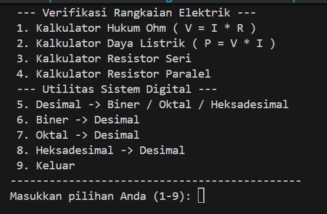

Dokumentasi visual dan teknis untuk program kalkulator dan konversi bilangan berbasis bahasa C.
Explore Features
Fitur utama yang tersedia di dalam program Toolkit C.
Menghitung V, I, dan R secara otomatis.
Konversi bilangan ke basis 2.
Konversi bilangan ke basis 8.
Konversi bilangan ke basis 16.
Konversi biner, oktal, dan heksadesimal.
Berbasis loop dan validasi input.
Alur kerja internal program Toolkit C.
Pengguna memilih fitur dari menu utama.
Program memvalidasi input sesuai konteks.
Perhitungan atau konversi dijalankan.
Hasil ditampilkan ke terminal.
Dokumentasi visual berupa screenshot dan screen recording program.